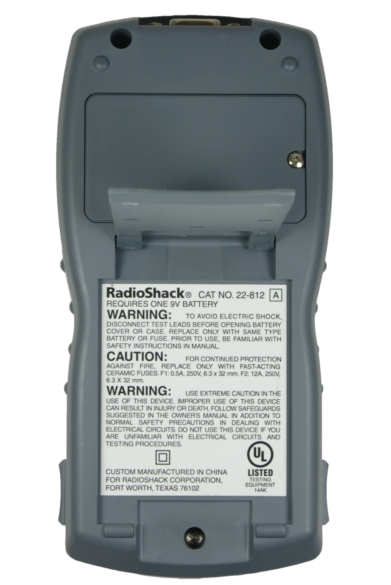
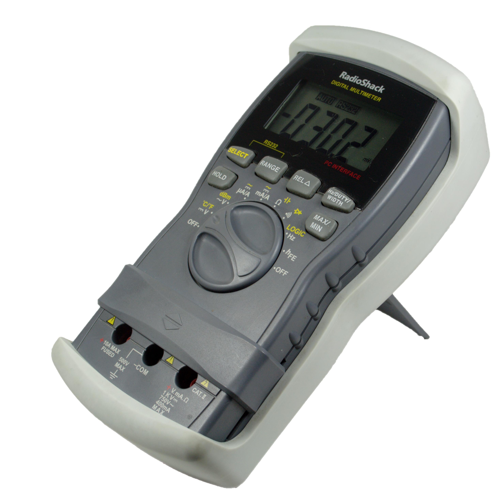
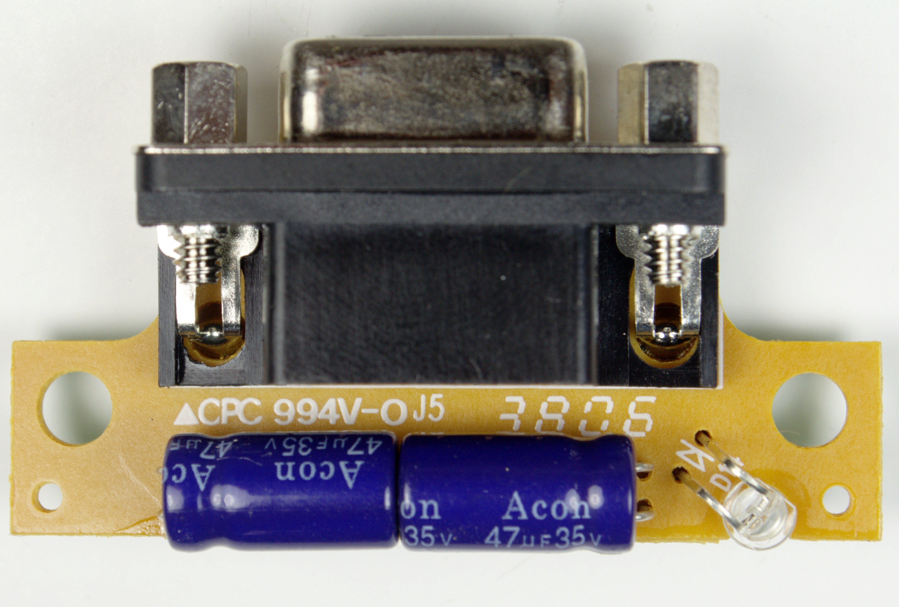
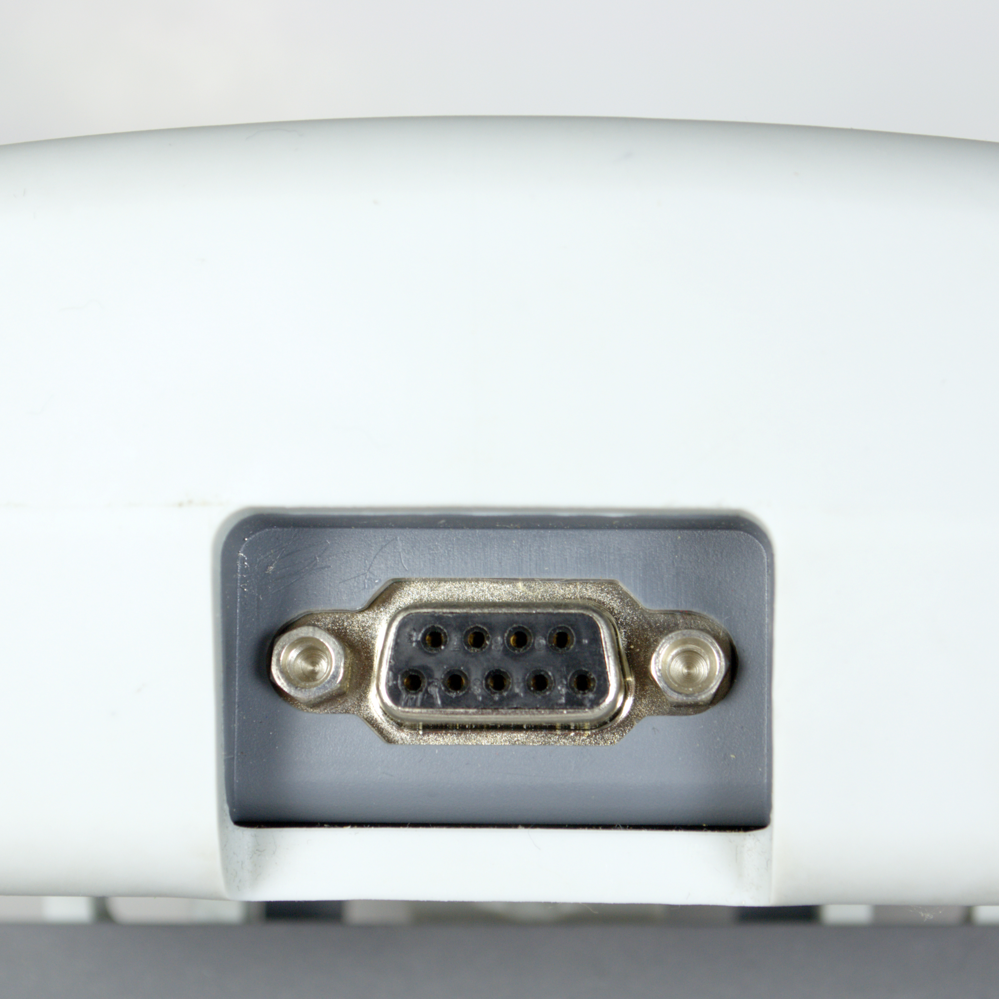
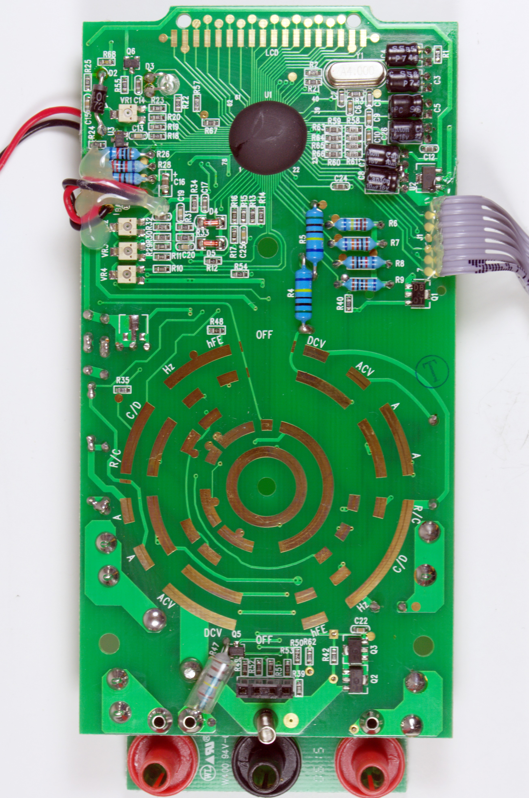
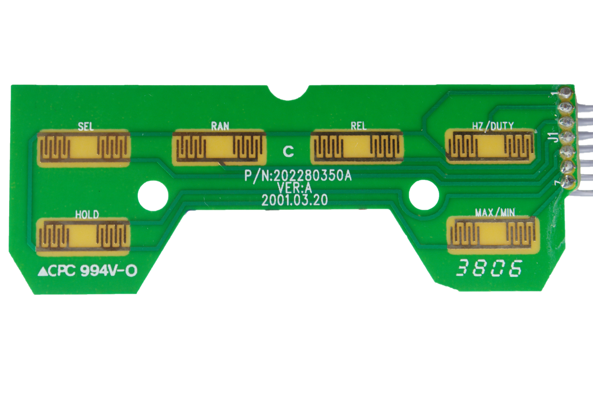
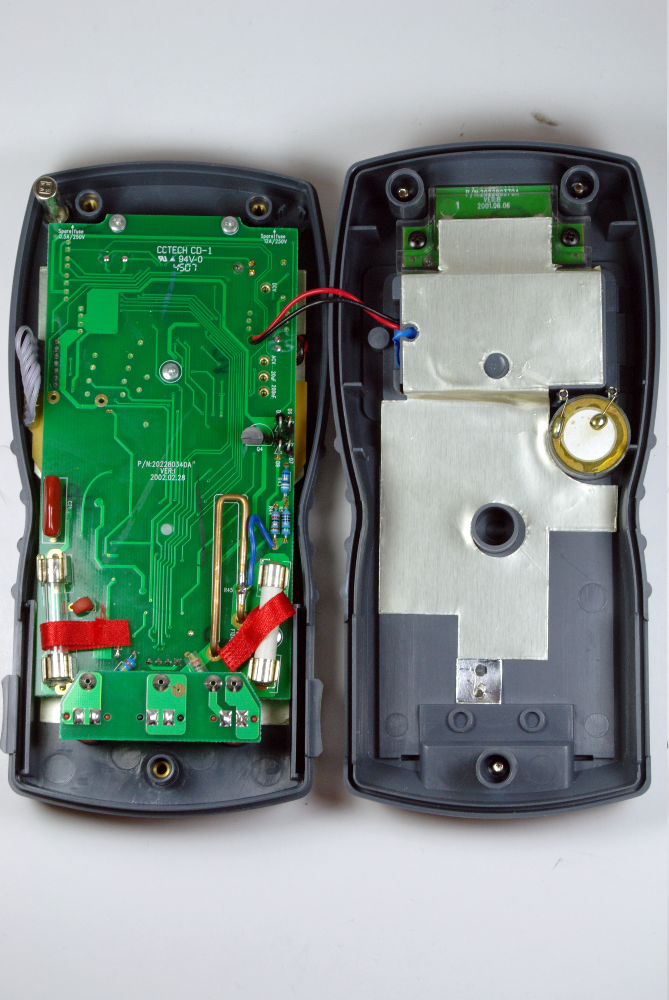
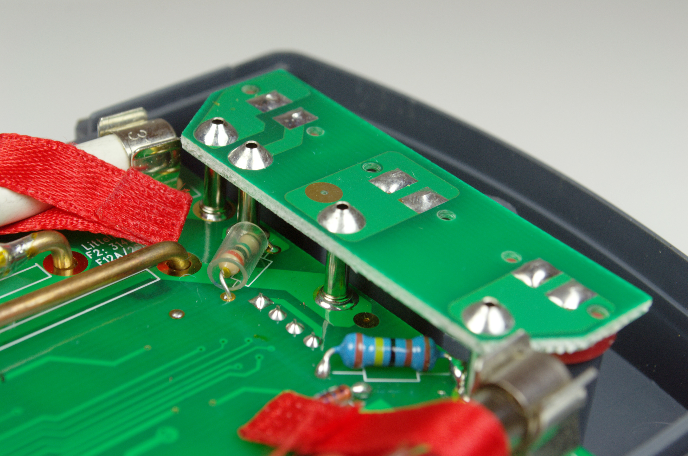
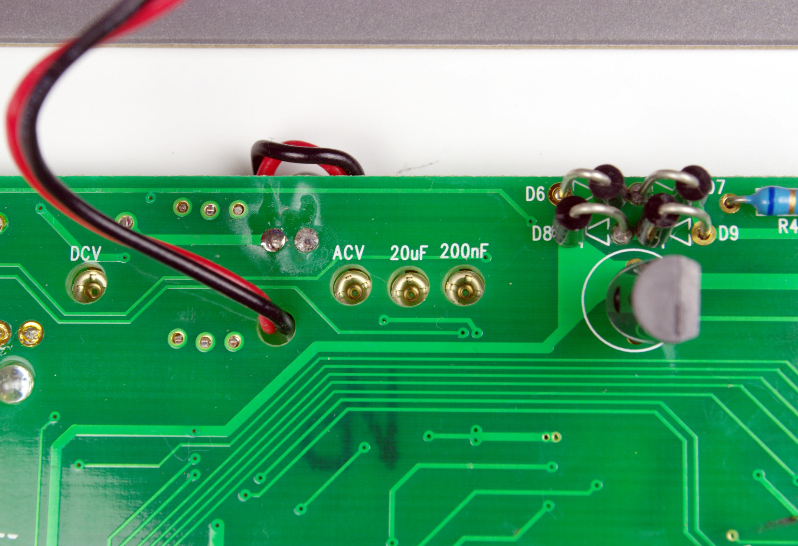
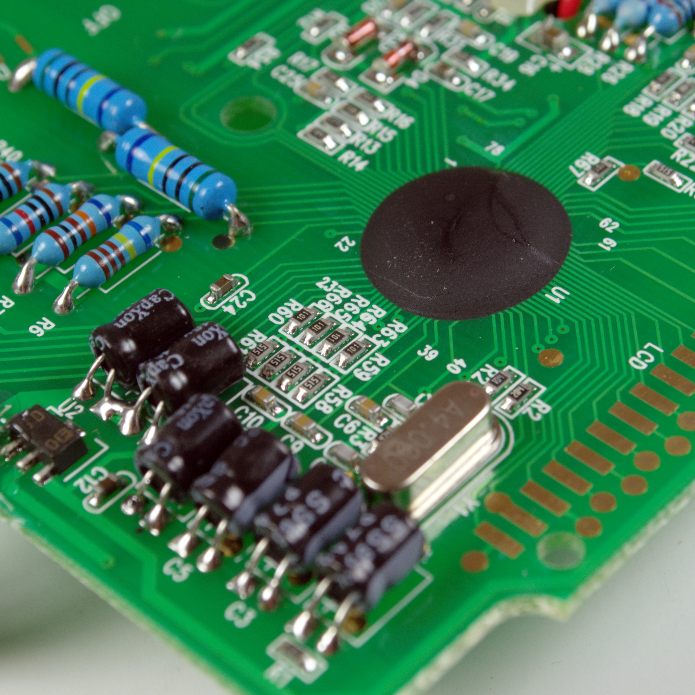

RadioShack 22-812¶

RadioShack 22-812¶
| Status | supported |
| Source code | serial-dmm |
| Counts | 4000 |
| IEC 61010-1 | CAT II (600V) |
| Connectivity | RS232 (standard DB9 connector) |
| Measurements | voltage, temperature, current, resistance, capacitance, continuity, diode, logic, frequency, hFE, duty cycle, pulse width |
| Features | autorange, data hold, min/max, dBmW (600Ω) |
| Website | radioshack.com |
The RadioShack 22-812 is a 4000 counts, CAT II (600V) handheld digital multimeter with RS-232 connectivity.
It is no longer sold under this part number, and for a while, it appeared to have been discontinued. RadioShack does sell a visually identical multimeter, the RadioShack 22-039. It is not yet clear if the 22-039 is the same device as the 22-812.
Hardware¶
The microcontroller is an unidentifiable plastic blob.
This devices has a standard DB-9 connector at the top, and does not require a special adapter cable. The RS-232 transmitter is optically insulated from the rest of the device. The transmitter uses a separate PCB, integrated into the multimeter's housing. The RS-232 module is powered from the serial port.
Photos¶
Radioshack 22 812 Nocover Back
{kind=link}
 Radioshack 22 812 Nocover Front
Radioshack 22 812 Nocover Front
 Radioshack 22 812 Pcb Back
Radioshack 22 812 Pcb Back
 Radioshack 22 812 Angle
{kind=link}
 Radioshack 22 812 Transmitter Top
{kind=link}
 Radioshack 22 812 Batt
Radioshack 22 812 Batt
 Radioshack 22 812 Interface
{kind=link}
 Radioshack 22 812 Pcb Front
{kind=link}
 Radioshack 22 812 Button Pcb
{kind=link}
 Radioshack 22 812 Front
Radioshack 22 812 Front
 Radioshack 22 812 Inside
{kind=link}
 Radioshack 22 812 Terminal
{kind=link}
 Radioshack 22 812 Fuse Holder
Radioshack 22 812 Fuse Holder
 Radioshack 22 812 Transmitte Module
Radioshack 22 812 Transmitte Module
 Radioshack 22 812 Pcb Removed
Radioshack 22 812 Pcb Removed
 Radioshack 22 812 Transmitter
Radioshack 22 812 Transmitter
 Radioshack 22 812 Calibration
{kind=link}
 Radioshack 22 812 Chip
{kind=link}
 Radioshack 22 812 Transmitter Back
Radioshack 22 812 Transmitter Back
Protocol¶
The device periodically sends 9-byte packets at 4800 baud, 8n1. The packet includes a mode indicator, payload and checksum. The payload is a 1-1 mapping of the LCD segments.
Packet structure¶
| Byte | 7 | 6 | 5 | 4 | 3 | 2 | 1 | 0 |
|---|---|---|---|---|---|---|---|---|
| 0 | Mode | |||||||
| 1 | Hz | Ohms | k | M | F | A | V | m |
| 2 | u | n | dBm | s | % | hFE | REL | MIN |
| 3 | 4D | 4C | 4G | 4B | DP3 | 4E | 4F | 4A |
| 4 | 3D | 3C | 3G | 3B | DP2 | 3E | 3F | 3A |
| 5 | 2D | 2C | 2G | 2B | DP1 | 2E | 2F | 2A |
| 6 | 1D | 1C | 1G | 1B | MAX | 1E | 1F | 1A |
| 7 | Beep | Diode | Bat | Hold | - | ~ | RS232 | Auto |
| 8 | Checksum |
Segment lettering¶
| A | ||
|---|---|---|
| F | B | |
| G | ||
| E | C | |
| D |
Mode byte¶
| Value | Meaning |
|---|---|
| 0 | DC V |
| 1 | AC V |
| 2 | DC uA |
| 3 | DC mA |
| 4 | DC A |
| 5 | AC uA |
| 6 | AC mA |
| 7 | AC A |
| 8 | Ohm |
| 9 | Capacitance |
| 10 | Hz (dial set to Hz) |
| 11 | Hz (dial set to DCV) |
| 12 | Hz (dial set to mA/A) |
| 13 | Duty cycle (dial set to Hz) |
| 14 | Duty cycle (dial set to DCV) |
| 15 | Duty cycle (dial set to mA/A) |
| 16 | Pulse width (dial set to Hz) |
| 17 | Pulse width (dial set to DCV) |
| 18 | Pulse width (dial set to mA/A) |
| 19 | Diode |
| 20 | Continuity (beep) |
| 21 | hFE |
| 22 | LOGIC |
| 23 | dBm |
| 24 | (Unknown) |
| 25 | Temp |
Resources¶
- rs22812.py project page (Python interface to RadioShack 22-812 DMM)
- RadioShack 22-812 user manual